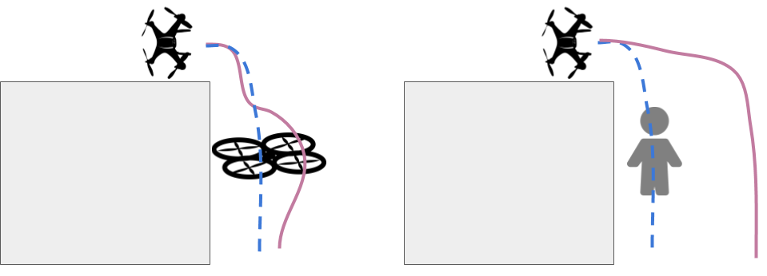

CRII: NeTS: A Wireless Sensing Platform for Safe Autonomous Driving
This webpage tracks the current progress of our NSF-funded project. Our sincere thanks to the National Science Foundation for supporting our research.
Project Goals
Recent years have witnessed an aggressive push towards building driverless cars. Yet, safely detecting hidden objects remains a major challenge facing fully autonomous driving. Sensors on an autonomous car today, such as cameras and laser range finders, can only detect objects in their direct field-of-view. As a result, they are blind to objects that are hidden due to occlusions or inclement weather. This proposal aims to use wireless communication to overcome this challenge and complement sensors on autonomous vehicles. It relies on the fact that wireless signals, unlike visible light, can penetrate through walls and obstacles. The proposal presents novel system for commodity wireless radios that detects and locates objects around an autonomous vehicle. It does so by developing algorithms that analyze the components of wireless signals that reflect off different objects in the environment. It studies the observed signal values across frequency to discover the material that the obstacles are made of. This allows the system to distinguish between, say, a hidden pedestrian and a hidden car, which should elicit different responses from the driverless car.
The proposed research investigates a novel framework to sense the location and material of obstacles in the vicinity of autonomous vehicles in both indoor and outdoor settings. It will develop an end-to-end system to process wireless signals on commodity wireless radios on autonomous vehicles that can readily be integrated with autonomous path planning systems. Its key intellectual contributions include: (1) A novel method to synchronize commodity Wi-Fi/DSRC radios on vehicular platforms to emulate large antenna arrays with wide bandwidth; (2) A mechanism to use this information to locate the spatial direction and range of surrounding objects; (3) An algorithm to discover the material of objects of interest by studying signals reflected off them across frequencies. The system will be fully validated indoors and outdoors on robotic and vehicular platforms.
Activities & Outcomes
Intellectual Merit

IntuWition: localizing hidden objects around autonomous vehicles using wireless signals (MobiCom 2019).
The proposed research led to an accepted poster in MobiCom 2018. Our system has been demonstrated on UAVs and mobile robotic platforms in indoor and outdoor settings.
On the Feasibility of Wi-Fi Based Material Sensing , Diana Zhang, Jingxian Wang, Junsu Jang, Junbo Zhang, Swarun Kumar, MobiCom 2019
Broader Impacts
The project has trained three graduate students and three undergraduate students. Findings and material from the research will be incorporated in the graduate course on wireless networking (18-859G) taught by the PI in Fall 2019. The PI has also participated in several outreach events by the CMU Gelfand center: the Science and Engineering Sampler which invites cohorts of K-12 students to campus to learn about state-of-the-art research and the HCV summer camp that invites high school students from under-represented communities. The PI presented findings of this research project to the students.